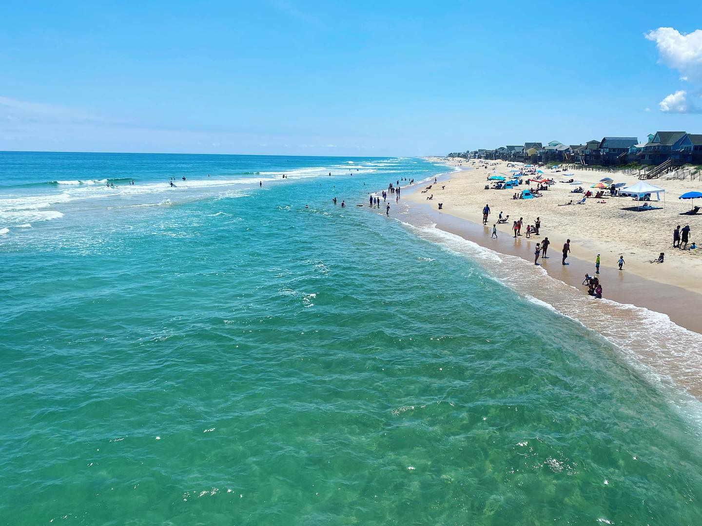
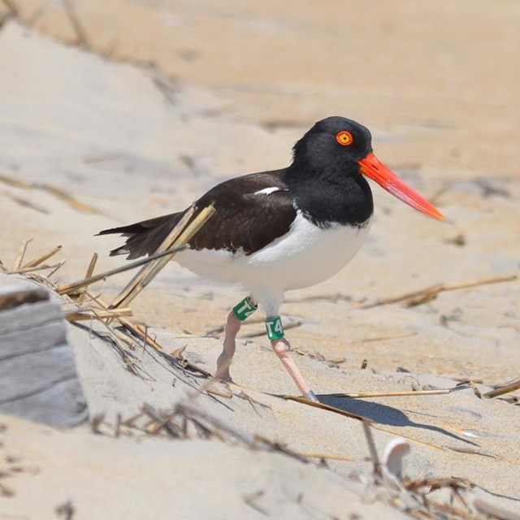

Explore the pristine beaches, historical landmarks, and exciting outdoor adventures of North Carolina’s Outer Banks and Hatteras Island.
Discover Outdoor AdventuresThe Outer Banks is a series of barrier islands along North Carolina's coast known for its natural beauty, rich history, and serene environment. Hatteras Island is famous for its lighthouse, long stretches of undeveloped beaches, and unique wildlife.
Whether you're looking for outdoor activities like surfing, fishing, or just relaxing on the beach, the Outer Banks and Hatteras offer something for everyone!
Explore the tallest brick lighthouse in the United States.
Enjoy the pristine beaches and ocean views of the Outer Banks.
Discover the unique wildlife that inhabits the Outer Banks.